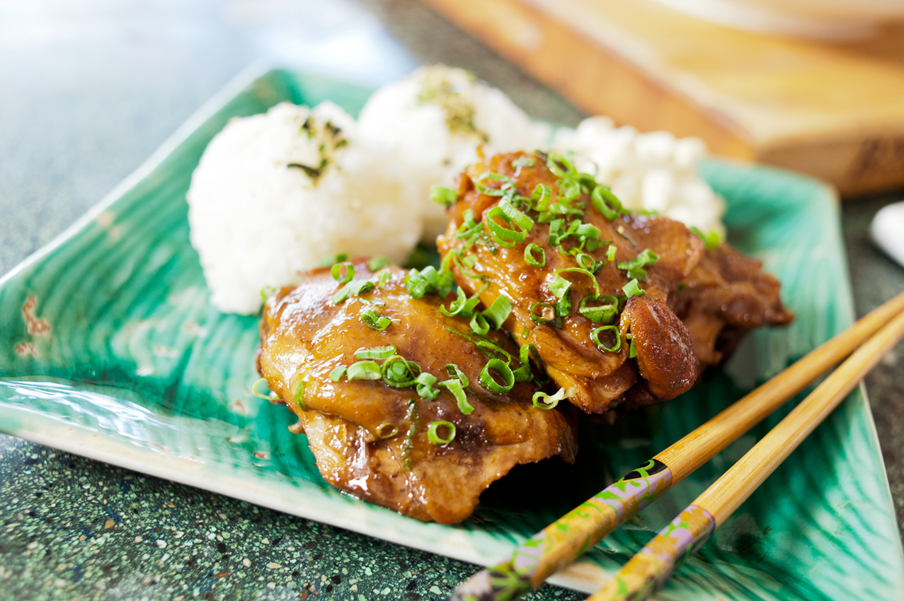
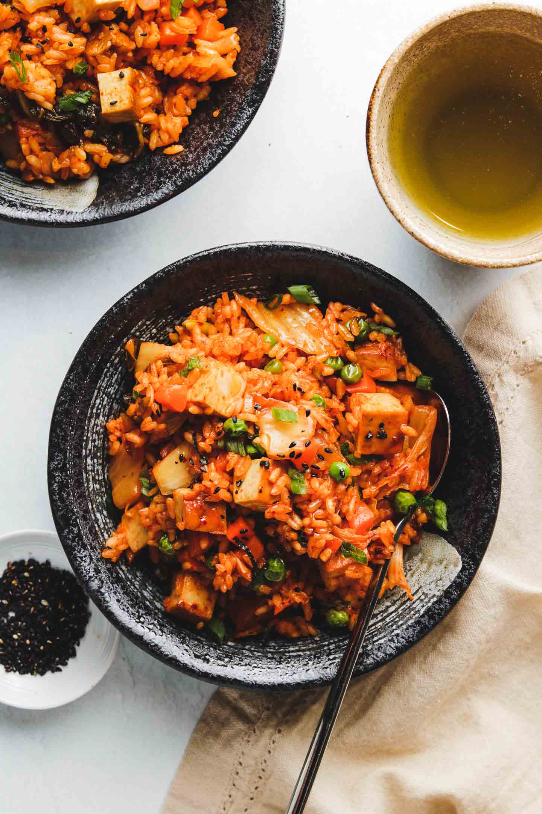
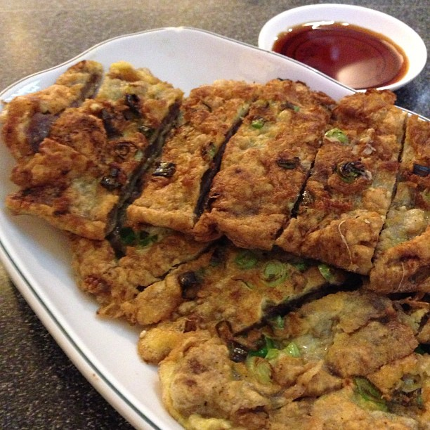
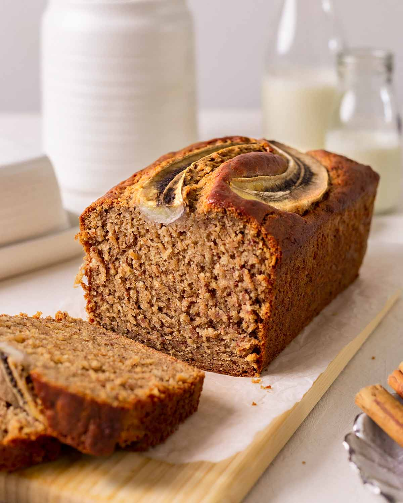
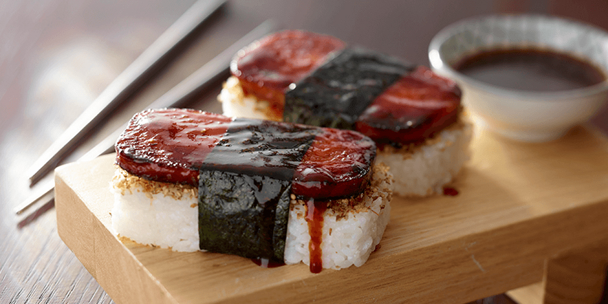
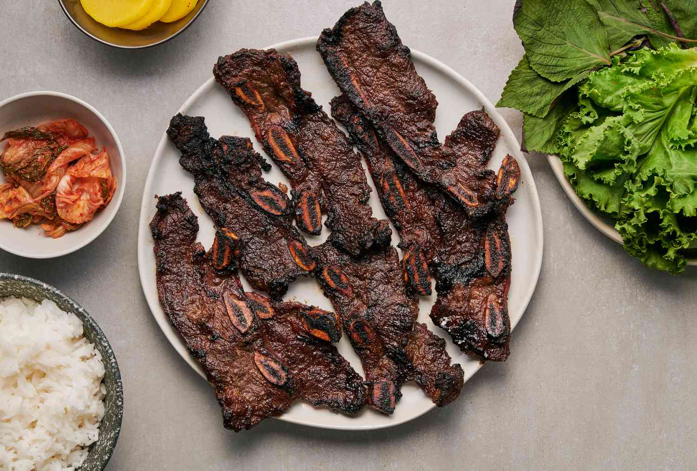
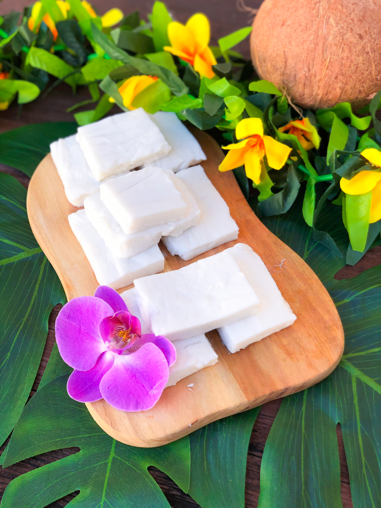

Shoyu Chicken
A comforting island-style chicken dish simmered in shoyu, ginger, garlic, and a little sweetness.
- chicken
- shoyu
- rice
Browse Grandma Jeong's recipes!

A comforting island-style chicken dish simmered in shoyu, ginger, garlic, and a little sweetness.

Day-old rice, chopped kimchi, and a fried egg come together for a quick family lunch.

Thin beef slices marinated, dipped in egg, and pan-fried until tender and golden.

Soft banana bread for using ripe local bananas before they go to waste.
A gentle soup with miso, tofu, seaweed, and green onion for simple family meals.

Crisp cucumber slices with rice vinegar, sesame oil, and a light shoyu dressing.

Rice, sweet shoyu-glazed Spam, and nori wrapped into a favorite local snack.

Flanken-cut short ribs marinated with shoyu, garlic, sesame, and a little sweetness.

A smooth coconut dessert that chills into soft squares for family gatherings.